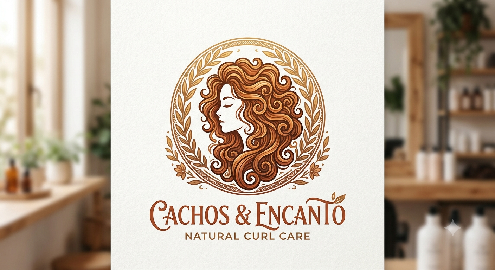

Caso de Wheeler
Por: Kaline Raissa

Dicas de cabelo
Por: Kaline Raissa
Resumo dos Cuidados com Cabelos Cacheados: Lavagem: Use produtos suaves (como shampoos sem sulfato), faça umectação com óleos vegetais e só desembarace o cabelo úmido e com condicionador. Finalização: Aplique a técnica de fitagem ou o método LOC (Líquido, Óleo, Creme) e amasse os fios com óleo após secarem para tirar o efeito rígido. Manutenção: Use touca ou fronha de cetim para evitar o frizz ao dormir e borrifador com água e creme para revitalizar os cachos no day after.